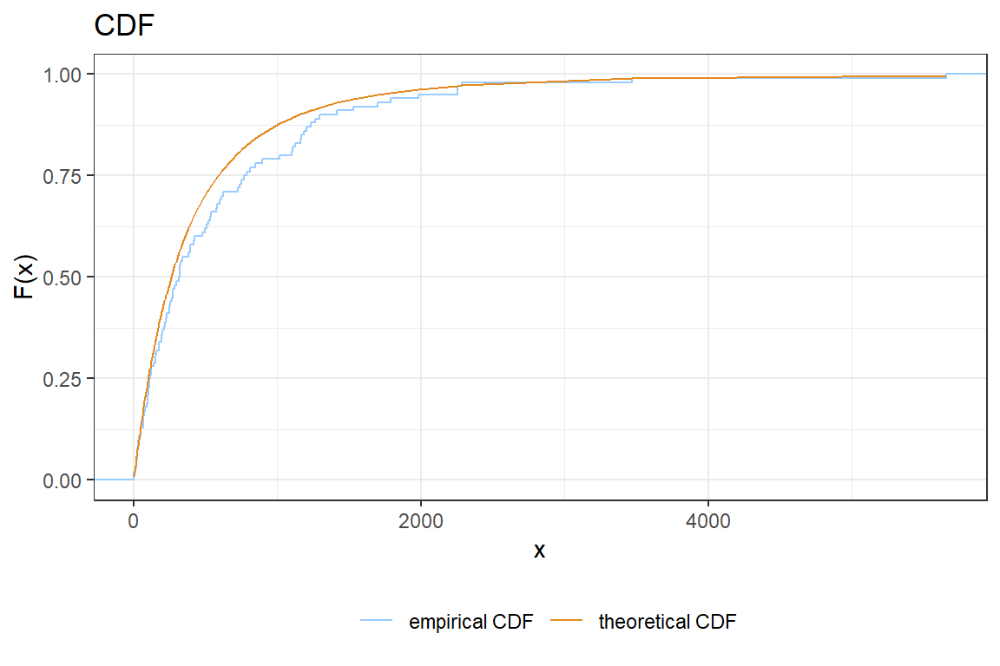
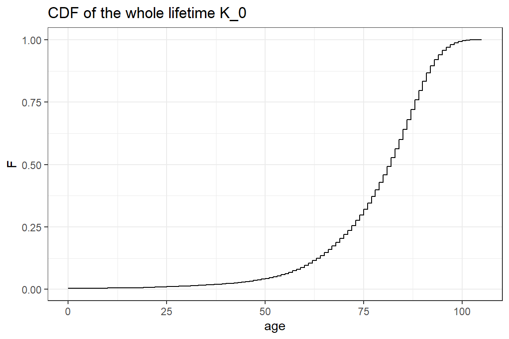
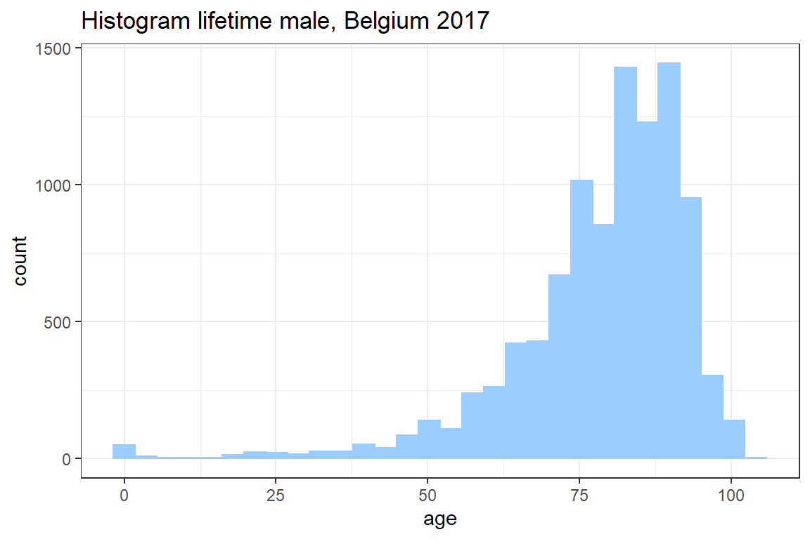
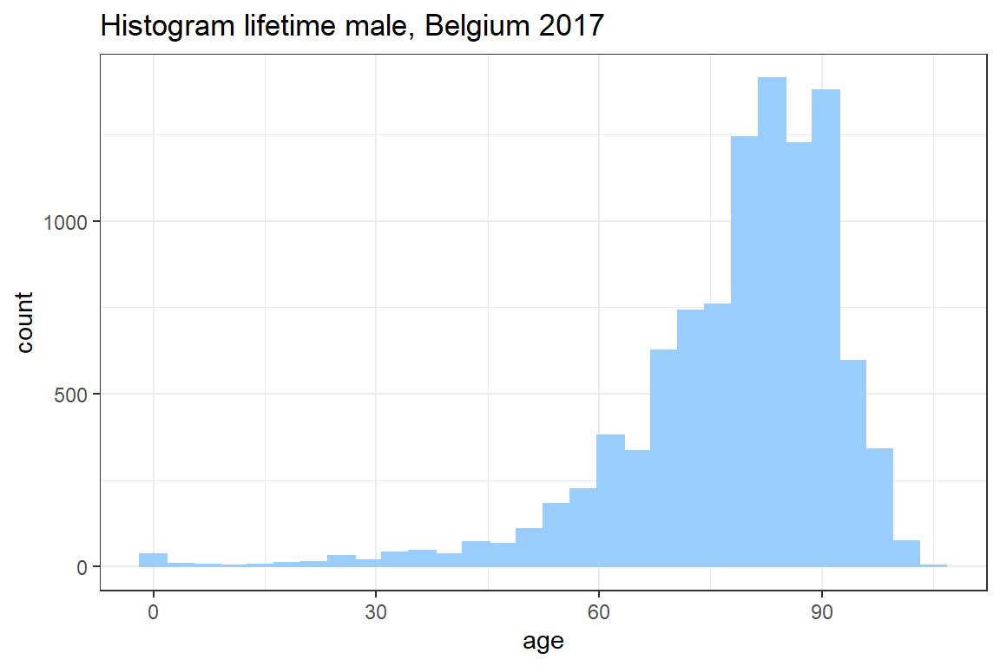

5 Simulation
You will now focus on simulation methods. You will first learn how to draw simulations from a specified, parametric distribution using the Probability Integral Transform (PIT) technique. Then, you will apply your insights to a real-life example where the future lifetimes of newborns are simulated using a recent life table published by Statistics Belgium.
5.1 Severity
In this exercise you will simulate \(100\) losses \(X\) from a Pareto distribution with distribution function
\[ F_X(x) = 1 - \left( \frac{1000}{1000 + x}\right)^3.\]
You will use these simulated observations to calculate the expected loss with a deductible of \(300\), i.e. \(E[(X - 300)_+]\).
5.1.1 Probability integral transform
The probability integral transform (PIT) refers to the following property (see Section 20.1 in the Loss Models book)
If a random variable \(X\) has a continuous distribution with CDF \(F_X\). Then the random variable \(Y\) defined as \(Y = F_X(X)\) has a uniform distribution.
A modified version of this property is often used when simulating data
Given a CDF \(F_X\) of a continuous distribution and a uniformly distributed random variable \(U\) on \([0, 1]\). Then \(F_X\) is the CDF of the random variable \(X = F_X^{-1}(U)\).
We illustrate this with the exponential distribution, \[ F_Y(y) = \begin{cases} 1 - \exp(-\lambda \cdot y) & y \geq 0 \\ 0 & y < 0 \end{cases} \] and \[ F_Y^{-1}(z) = -\frac{\log(1-z)}{\lambda}, \quad z \in (0, 1). \]
We simulate \(u\) from a uniform distribution on \([0, 1]\).
When we now apply the inverse cdf on this simulation \(u\), we obtain a simulation from the exponential distribution.
Finverse <- function(z, lambda) {
-log(1-z) / lambda
}
lambda <- 1
sim <- Finverse(u, lambda)
print(c(u = u, sim = sim)) u sim
0.5858 0.8814 Loading required package: latex2exp
For more information see probability integral transform and inverse transform sampling. Because of this property, you can follow the steps below to simulate \(n\) independent observations from a distribution with CDF \(F_X\):
- Simulate \(n\) indepdendent observations \(u_1, \ldots, u_n\) from a uniform distribution (
runifin R) on \([0, 1]\); - Calculate \(F_X^{-1}\);
- \(F_X^{-1}(u_1), \ldots, F_X^{-1}(u_n)\) are \(n\) independent observations with CDF \(F_X\).
Now follow these steps in R and generate \(100\) independent observations from a Pareto distribution.
- Create a vector
ucontaining \(100\) independent observations from a uniform distribution; - Compute \(F_X^{-1}\) on paper and implement \(F_X^{-1}\) as a function in R;
- Calculate \(F_X^{-1}(u)\).
5.1.2 Visualization
You will create the following visualization to compare the actual and empirical CDF.

- Create a function
cdfin R with input a vector \(x\) and output a vector \(F_X(x)\); - Compute the theoretical cdf in the simulated points and store the result in a vector \(y\);
- Load the package
ggplot; - Complete the following
ggplotcommand to plot the empiciral and theoretical CDF.
col = "empirical CDF"selects a different color for each line and adds a legend to the figure;scale_colour_manualspecifies the colors to be used in in the figure. The first argument specifies the title for the legend;
ggplot() +
stat_ecdf(aes(???, col = "empirical CDF")) +
geom_line(aes(???, ???, col = "theoretical CDF")) +
scale_colour_manual("legend title", values=c("#99CCFF","#e58920"))theme(...)changes many visual aspects of a ggplot figure. Search in the documentation for an option to move the legend to the bottom of the figure.Improve your graph by adding options such as
theme_bw(),xlab,ylab,ggtitle, ….
5.1.3 Expected loss with a deductible
Statistical quantities of the distribution can be approximated by means of the simulated data. You will now calculate the expected loss when there is a deductible of \(300\) using your simulated data.
Write a function
deductibletaking as inputx(a vector containing the loss amounts) andd(the deductible) and returning a vector \(y\) with \(y_i = (x_i-d)_+ = \max(x_i-d, 0)\);Test the function
deductiblethat you defined in the previous step. What is the output fordedutible(c(500, 200), 300). Is your function working as expected? A common mistake in implementing thedeductiblefunction is a misunderstanding of themaxfunction in R;
[1] 3[1] 2 3- Calculate \(E(X-300)_+\) for your simulated vector.
5.2 Aggregate loss
The number of claims \(N\) on an insurance contract is Poisson distributed with mean \(2\). The claim sizes \(X\) are independently distributed with CDF
\[ F_X(x) = \begin{cases} 0 & x \leq 0 \\ x^2 & 0 < x \leq 1 \\ 1 & x > 1 \end{cases}. \] The insurer wants to investigate the difference between imposing an aggregate or an ordinary deductible for this contract. You will calculate (using 10000 simulations) the expected loss by contract for both an aggregate deductible of \(0.2\) and an ordinary deductible of \(0.2\).
- Simulate \(10000\) observations for the number of claims \(N\). (Hint
rpois); - Use what you learnt in the previous exercise and create a function
simulate, which returnsnsimulations of the claim size distribution \(F_X\).
- Complete the following for-loop to simulate 10000 aggregate losses when there is no deductible
n <- 10000
nclaim <- # Result from 1.
# create an empty vector to store the aggregated loss
aggregated.loss <- rep(0, n)
for(i in 1:n)
{
# the claims for the i-th contract
claims <- simulate(nclaim[i])
# without deductible the aggregated loss is the sum of the individual claims
aggregated.loss[i] <- sum(claims)
}
# Calculate the expected loss per policy, when there is no deductible
mean(aggregated.loss)- Adapt the code in 3. to calculate the expected loss per policy when there is an aggregate deductible of \(0.2\);
- Adapt the code in 3. to calculate the expected loss per policy when there is an ordinary deductible of \(0.2\).
# @1
n <- 10000
nclaim <- rpois(n, lambda = 2)
# @2
cdf.inverse <- function(x)
{
return(sqrt(x))
}
simulate <- function(n)
{
u <- runif(n)
return(cdf.inverse(u));
}
# @3
n <- 10000
nclaim <- rpois(n, lambda = 2)
# create an empty vector to store the aggregated loss
aggregated.loss <- rep(0, n)
for(i in 1:n)
{
# the claims for the i-th contract
claims <- simulate(nclaim[i])
# without deductible the aggregated loss is the sum of the individual claims
aggregated.loss[i] <- sum(claims)
}
# Calculate the expected loss per policy, when there is no deductible
mean(aggregated.loss)[1] 1.328# @4
n <- 10000
nclaim <- rpois(n, lambda = 2)
# create an empty vector to store the aggregated loss
aggregated.loss <- rep(0, n)
for(i in 1:n)
{
# the claims for the i-th contract
claims <- simulate(nclaim[i])
# without deductible the aggregated loss is the sum of the individual claims
aggregated.loss[i] <- sum(claims)
}
# Calculate the expected loss per policy, when there is no deductible
mean(pmax(aggregated.loss - 0.2, 0))[1] 1.16# @5
n <- 10000
nclaim <- rpois(n, lambda = 2)
# create an empty vector to store the aggregated loss
aggregated.loss <- rep(0, n)
for(i in 1:n)
{
# the claims for the i-th contract
claims <- pmax(simulate(nclaim[i]) - 0.2, 0)
# without deductible the aggregated loss is the sum of the individual claims
aggregated.loss[i] <- sum(claims)
}
# Calculate the expected loss per policy, when there is no deductible
mean(aggregated.loss)[1] 0.94135.3 Simulating future life times of newborns
In this exercise you simulate the age at death for 10000 newborns based on the lifetable for Belgian males in 2017 published by stabel. You will use these simulations to construct a histogram as well as a density plot of the lifetime distribution.
5.3.1 Importing the data
Download and save the file lifetableMaleBE2017.csv on your local drive. This file contains the columns age and q, where
\[ q_{age} = P(T_0 \in (age, age + 1] \mid T_0 > age),\] with \(T_0\) the random variable describing the lifetime of a newborn. Hence, \(q_{age}\) is the one year probability of dying at age \(\text{age}\).
- Save the file lifetableMaleBE2017.csv on your local drive;
- Use
read.tableto load the data into R. Semicolons;separate the data and the first line of the data contains the variable names; - Create variables
ageandqwhich store the corresponding variables from the dataset.
5.3.2 Simulate the whole life time
First, you simulate the whole remaining lifetime \(K_0 = \lfloor{T_0} \rfloor\) for a newborn. The whole lifetime is the integer age at which the newborn dies. You calculate the cdf of \(K_0\) at integer ages \(x\) as follows
\[\begin{align*} P(K_0 \leq x) &= P(T_0 < x+1) \\ &= 1 - P(T_0 \geq x+1) \\ &= 1 - P(T_0 \geq x + 1 \mid T_0 > x) \cdot P(T_0 > x) \\ &= 1 - (1-q_{x}) \cdot P(T_0 > x) \\ &= 1 - \prod_{i=0}^{x} (1-q_{x-i}). \end{align*}\]
or you reason as follows
\[\begin{align*} P(K_0 \leq x) &= P(K_0=0)+P(K_0=1)+ \ldots +P(K_0=x) \\ &= q_0+(1-q_0)\cdot q_1 + (1-q_0)\cdot(1-q_1)\cdot q_2 + \ldots + (1-q_0)\cdot(1-q_1)\ldots (1-q_{x-1})\cdot q_x \\ &= 1 - \prod_{i=0}^{x} (1-q_{x-i}). \end{align*}\]
- Create a vector
cdfin R with \(cdf[x+1] = P(K_0 \leq x)\) for \(x \in 0, \ldots, 105\). Hint:cumprodin R;
[1] 2 6 30 210The Figure below shows the CDF of the whole lifetime \(K_0\) for a newborn. Since \(K_0\) is a discrete random variable this CDF is a step function.

The following Theorem presents a strategy for simulating from a discrete distribution given its CDF.
Given a CDF \(F_X\) of a discrete distribution with possible outcomes \(x_1, \ldots, x_n\) and a uniformly distributed random variable \(U\) on \([0, 1]\). Then \(F_X\) is the CDF of the random variable \(X = \max_{x_i} \{ F_X(x_i) \leq U \}\).
- Complete the code below to simulate a single observation from \(K_0\). This function performs the following steps:
- Simulate an observation \(u\) from a random variable \(U \in [0, 1]\);
- Loop over all posible ages \(x\) in increasing order;
- Find the smallest age \(x\) for which \(F_{K_0}(x) > u\);
- The previous age \(x-1\) is the largest age for which \(F_{K_0}(x) \leq u\). By the theorem above, \(x-1\) is a simulation for the whole age.
simulWholeAge <- function()
{
# simulate one observation u from a uniform distribution on [0, 1]
u <- runif(1);
# loop over all posible values F_X(x_i) in increasing order
for(j in 1:length(cdf))
{
# Check F_X(x_i) > U
if( ??? )
{
# If F_X(x_i) > u, then the previous value x_{i-1} is the largest value for which F_X(x_{i-1}) <= u
return( ??? );
}
}
}- Use
simulWholeAgeto generate 10000 observations from the distribution of \(K_0\);
# the number of simulations
nsim <- 10000
# initialise a vector with nsim zeroes.
K <- rep(0, nsim)
for(i in 1:nsim)
{
# Simulate the age of death for a single individual;
K[i] <- ???
}- Use
ggplotto create a histogram of your simulation for the whole life time. Seegeom_histogram.

cdf <- 1 - cumprod(1-q)
nsim <- 10000
K <- rep(0, nsim)
simulWholeAge <- function()
{
u <- runif(1);
for(j in 1:length(cdf))
{
if(u < cdf[j])
{
return(j-1);
}
}
}
for(i in 1:nsim)
{
K[i] <- simulWholeAge();
}
ggplot() +
geom_histogram(aes(K), col = "#99CCFF", fill = "#99CCFF") +
theme_bw() +
ggtitle("Histogram lifetime male, Belgium 2017") +
xlab('age')`stat_bin()` using `bins = 30`. Pick better value with `binwidth`.
5.3.3 Simulate the future lifetime
You will now simulate the exact (instead of integer) remaining lifetime \(T_0\) of a newborn. Note that \(T_0\) can be written as (explain!) \(T_0 = \lfloor T_0 \rfloor + (T_0-\lfloor T_0 \rfloor)\) where \(\lfloor T_0 \rfloor \in \mathbb{N}\) and \((T_0-\lfloor T_0 \rfloor) \in [0,1)\). You will need to make an assumption regarding the probability of dying at non-integer ages. You assume a constant force of mortality between integer ages, i.e.
\[ P(T_0 \leq t + x \mid T_0 > x) = 1 - \exp(-\mu_x \cdot t), \quad \text{for} \quad x \in \mathbb{N} \quad \text{and} \quad t \in [0, 1)\] for some intensity \(\mu_x\) of dying at age \(x\). More insight behind this assumption will be given in the courses on Life Insurance Mathematics and Advanced Life Insurance Mathematics. The intensity \(\mu_x\) can be found by taking \(t = 1\) in the above expression,
\[ 1 - \exp(-\mu_x) = P(T_0 \leq 1 + x \mid T_0 > x) = q_x, \] from which
\[ \mu_x = -\log(1-q_x).\]
From this you compute the distribution of \(T_0 - K_0 \mid K_0 = x\),
\[\begin{align} P(T_0 - K_0 \leq t \mid K_0 = x) &= P(T_0 \leq x + t \mid T_0 \geq x,\ T _0\leq x+1) \\ &= \frac{P(T_0 \leq x+t \mid T_0 \geq x)}{P(T_0 \leq x+1 \mid T_0 \geq x)} \\ &= \frac{1- (1-q_x)^t}{q_x}. \end{align}\]
In the previous section, you simulated an observation for the whole lifetime \(K_0\) of a newborn. You will now simulate a corresponding observation from the distribution of \(T_0-K_0 \mid K_0\). The distribution for \(T_0 - K_0 \mid K_0\) is continuous and the classical Probability Integral Transform can be used.
- Show that the inverted CDF of \(T_0 - K_0 \mid K_0\) is given by
\[ F^{-1}_{T_0-K_0\mid K_0}(y \mid x) = \frac{\log(1-q_x \cdot y)}{\log(1-q_x)}; \]
Simulate for each observation of \(K_0\) a sample from the distribution \(T_0-K_0 \mid K_0\). Verify that the correct value of \(q_x\) is used for each sample;
Add the simulations from \(K_0\) and \(T_0-K_0 \mid K_0\) to obtain simulations for the remaining lifetime \(T_0\) of a newborn.